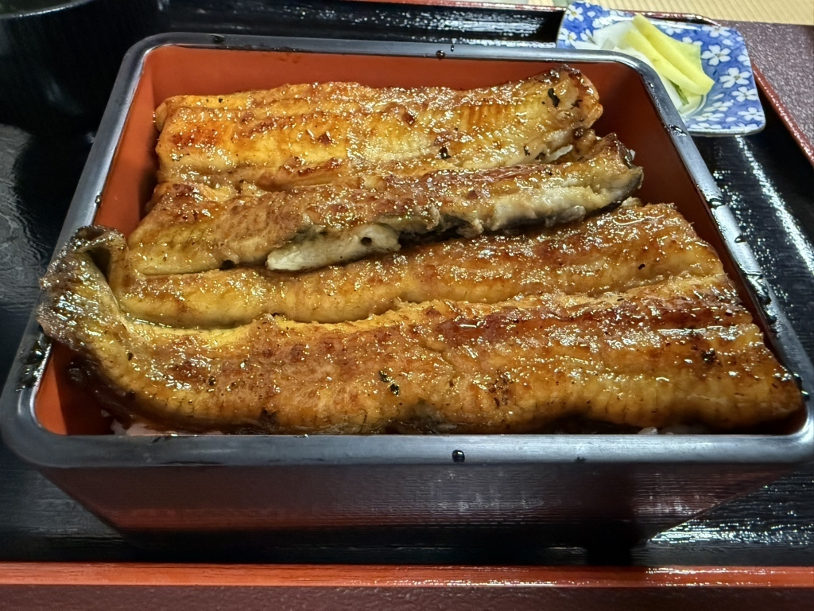
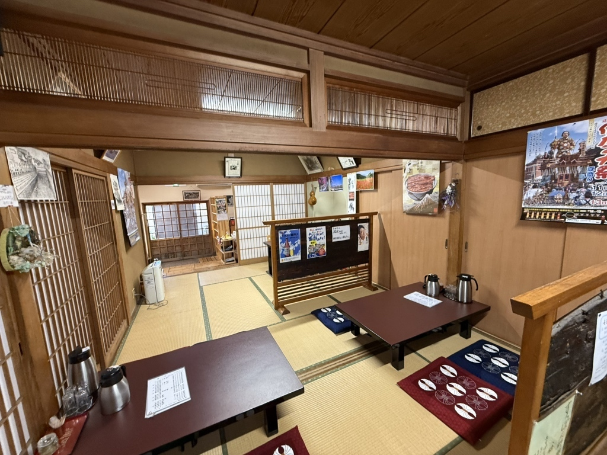
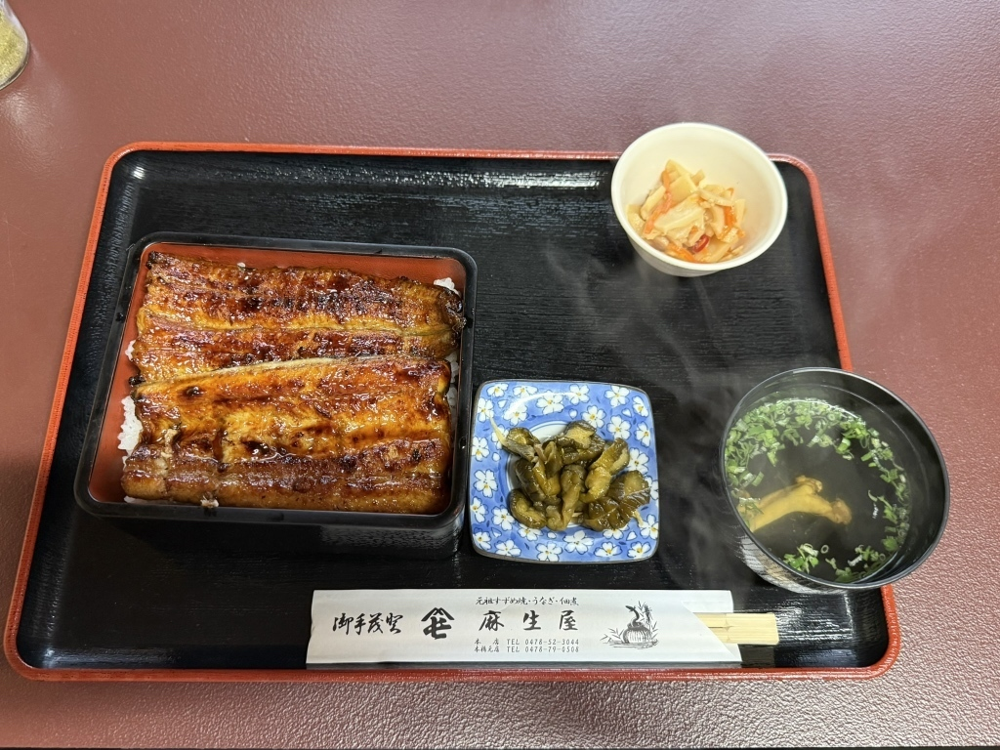
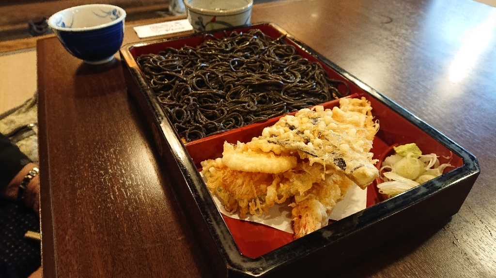
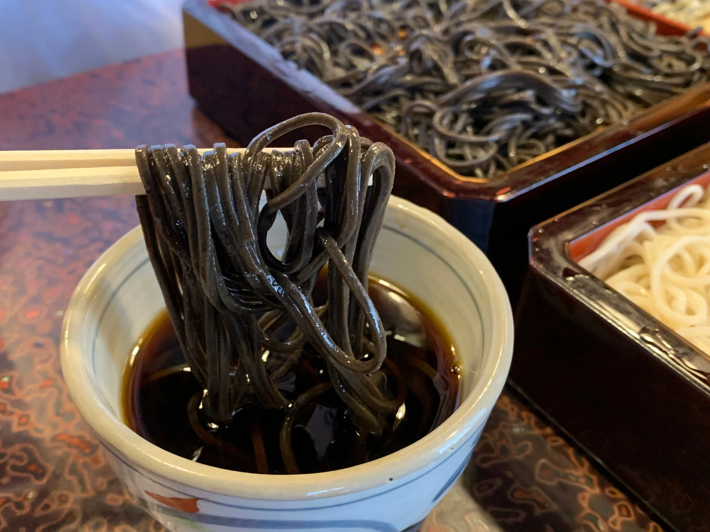
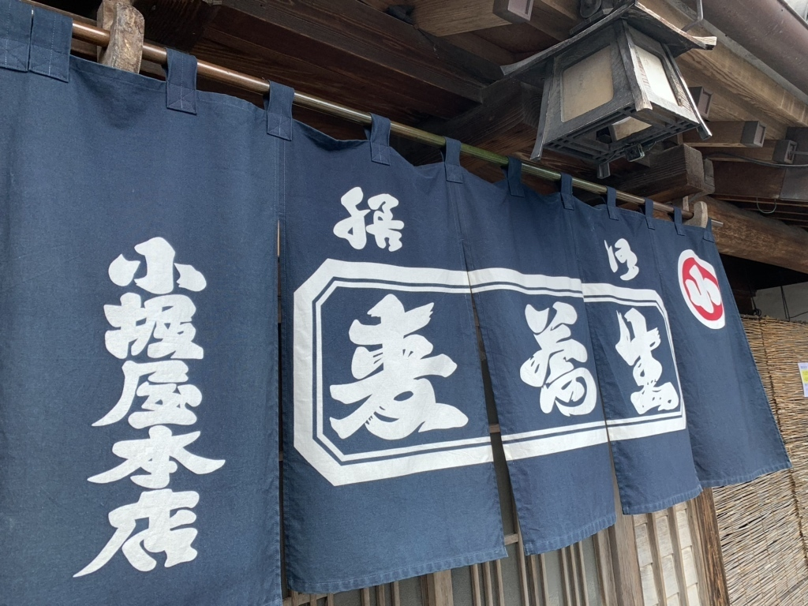
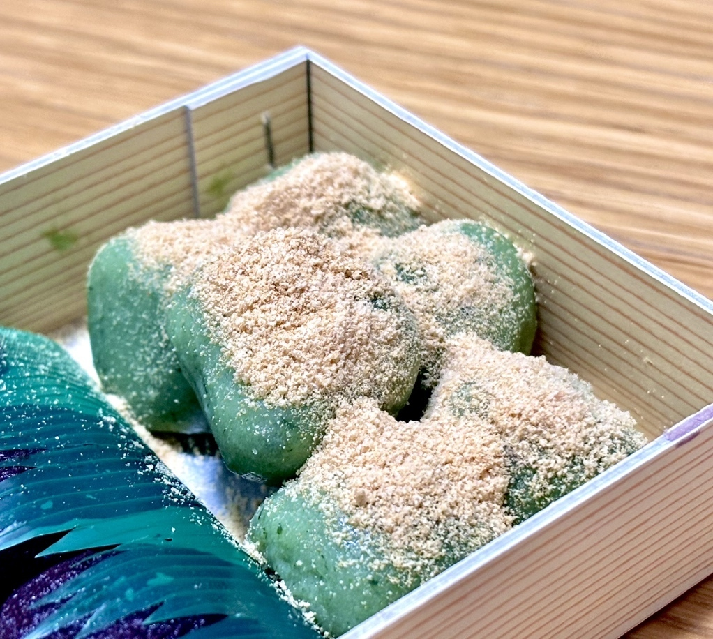
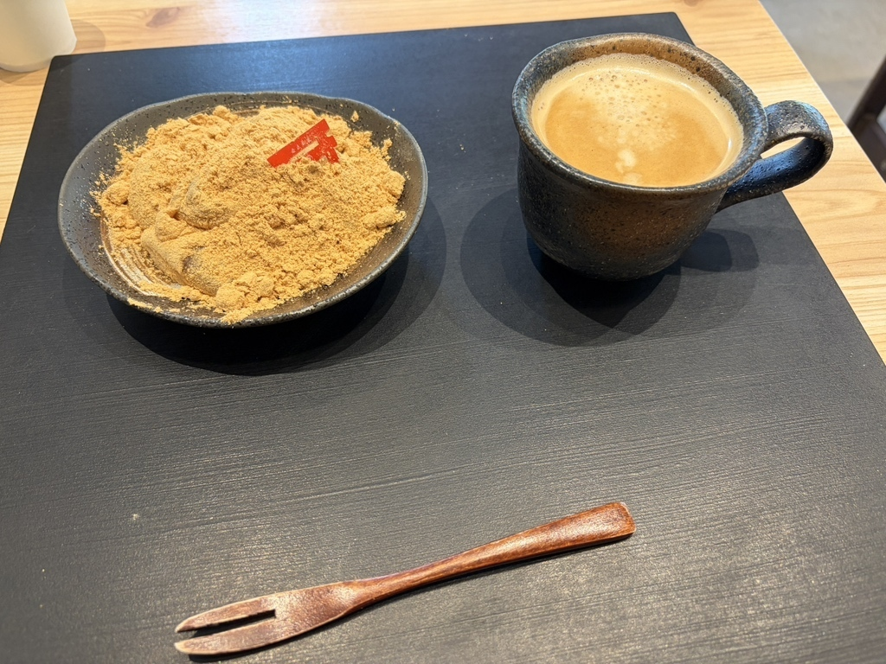
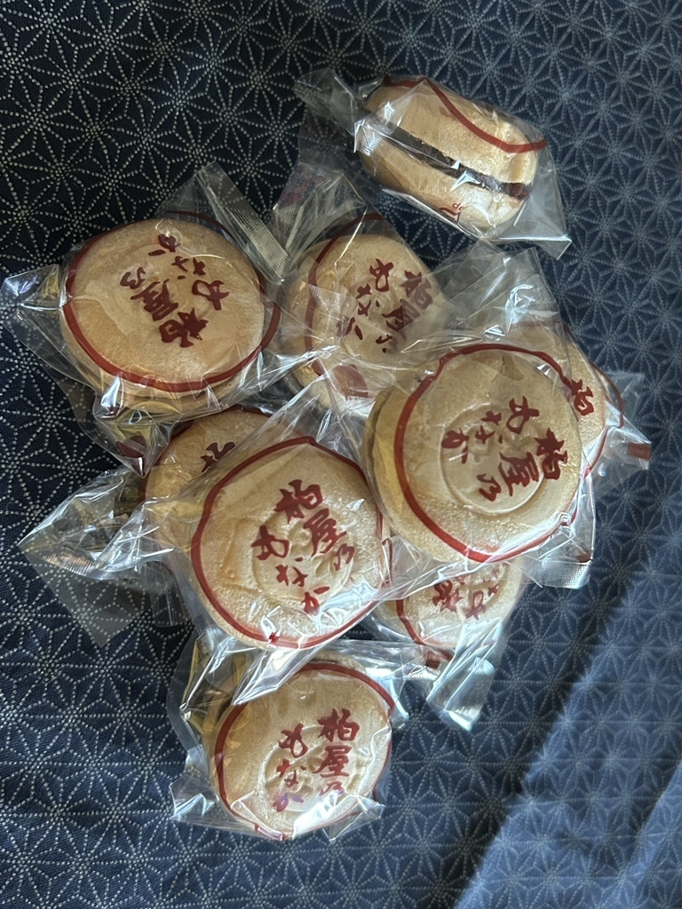

おすすめ観光地！
・
佐原 の 町並 み
香取市を縦に流れる小野川の流域は、江戸時代の町並みが今なお残る、「北総の小江戸」として有名な地域である。
利根川が物資の主な運輸網だったため、分流の小野川周辺には、河港となり旅館や商店が立ち並んでいた。
川ぞりには重厚な木造建築が軒を連ねており、昔の繁栄ぶりをうかがうことができる。
香 取 神 宮
香取市に鎮座する全国約400社の香取神社の総本社です。
祭神は経津主大神で、日本神話で武甕槌命と共に葦原中国平定に功績があった武道の神様です。
伊勢神宮、鹿島神宮と共に、「神宮」の社号を持ち、古くから皇室や幕府からも崇敬されてきました。
現在の社殿は江戸幕府5代将軍・徳川綱吉公の命により造営されたもので、本殿や楼門は国の重要文化財に指定されています。
近隣の鹿島神宮と対をなす存在であり、厄除けや勝負運、開運招福の御利益があるとされ、多くの参拝者が訪れます。
・
・
伊 能 忠 敬 旧 宅
江戸時代に日本初の全国実測地図を完成させた伊能忠敬は、17歳から49歳までを佐原で過ごしました。
彼の旧宅は、国の史跡に指定されており、築200年以上の歴史を持つ建物です。
醸造業などを営んでいた豪商・伊能家の繁栄を今に伝え、利根川の水運で栄えた小野川沿いに当時の面影を残しています。
店舗や母屋、土蔵が現存し、小野川からの眺めは江戸時代の暮らしや賑わいを想像させます。
おすすめグルメ！



佐原の鰻料理は、江戸時代に利根川の
水郷として栄えた歴史と深く結びついています。
当時、新鮮な川魚が豊富に獲れ、
多くの老舗鰻屋が軒を連ねました。
特徴は、職人が丁寧に焼き上げる鰻と、
各店秘伝の甘辛いタレの調和です。
小江戸の風情残る町並みで味わうことで、
格別な体験ができます。
歴史と文化を感じる鰻は、
水郷佐原観光協会のサイトなどで紹介される
魅力的な逸品です。



佐原の老舗「小堀屋本店」で考案された黒切りそばは、寛政年間創業の歴史を持つ地域名物です。
その最大の特徴は、生地に昆布を練り込むことによる漆黒の麺の色と、磯の風味です。
そば粉は玄そばを挽いた「挽きぐるみ」を用いることが多く、これも濃い色合いを生み出します。
昆布のグルタミン酸由来の旨味と、強いコシ、
ツルツルとした独特の喉越しの良さが魅力。
水郷佐原の食文化が育んだ個性的なそばとして、地元で長く愛され続けています。



香取市佐原は、利根川水運で栄えた
「北総の小江戸」です。
江戸時代から続く歴史的町並みの中、
和菓子は地域の食文化を支える伝統として
根付いてきました。
三百六十年以上の歴史を持つ「御菓子司 虎屋」や、
明治創業の「岩立本店」など老舗が多く、
職人が香取神宮の御神水や地元産サツマイモ
といった厳選素材を使用し、素朴で上品な
味わいを生み出しています。
特に、とろけるような「わらび餅」や芋菓子は
看板商品で、その伝統の味は今も多くの人々を
魅了しています。
お問い合わせ
ご質問、ご意見、ご要望など、ございましたら下記フォームよりお気軽にお問い合わせください。
- お問い合わせ内容によっては、お返事にお時間をいただく場合がございます。
- 必須の項目は必ずご入力をお願いいたします。
📝 お問い合わせフォーム
📞 お電話でのお問い合わせ
電話番号: 000-123-4567
受付時間: 10:00～17:00 (土日祝日を除く)